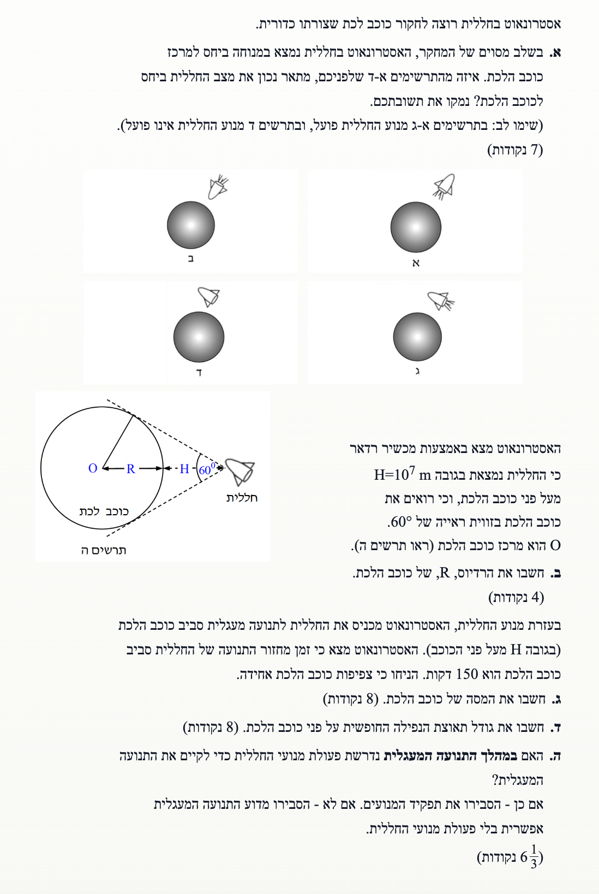
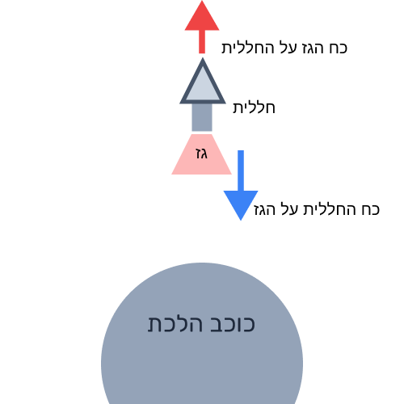
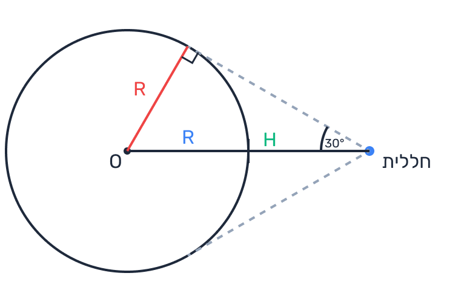

פתרון מלא: בגרות מכניקה 2009, שאלה 5
פיזיקה, מכניקה 5 יח"ל | כבידה ותנועה מעגלית
פתרון מלא, מוסבר צעד-אחר-צעד הכולל דינמיקה, חוקי ניוטון וכבידה עולמית
עודכן:
--- --:--:--
מבט כללי על השאלה
שלום תלמידים! בשאלה זו אנו מלווים אסטרונאוט החוקר כוכב לכת. השאלה משלבת הבנה של חוקי ניוטון (דינמיקה), גאומטריה של תצפית, וכמובן - חוק הכבידה העולמי של ניוטון ותנועה מעגלית.
ניגש לכל סעיף צעד אחר צעד.

[תמונת השאלה המקורית]
לא נמצאה תמונה בשם question-image.png באותה תיקייה.
מה נתון: החללית נמצאת במנוחה ביחס למרכז כוכב הלכת. ישנם ארבעה תרשימים (א-ד). בתרשימים א-ג מנוע החללית פועל, ובתרשים ד' המנוע כבוי.
מה מחפשים: לקבוע איזה מהתרשימים מתאר נכון את מצב החללית ביחס לכוכב הלכת, ולנמק זאת פיזיקלית.
נוסחאות ועקרונות בשימוש:
\( \Sigma \vec{F} = m \vec{a} \) (החוק השני של ניוטון)
עקרון: מנוחה משמעה שגודל המהירות אפס (\(v=0\)) ולא משתנה, לכן התאוצה שווה לאפס (\(a=0\)), ולכן שקול הכוחות חייב להיות אפס (\( \Sigma F = 0 \)). בנוסף, אנו משתמשים בעקרון פעולה ותגובה: המנוע דוחף גזים החוצה בכיוון אחד, והגזים דוחפים את החללית בכיוון הנגדי (כוח דחף).
פתרון צעד-אחר-צעד:
החללית נמשכת למרכז כוכב הלכת על ידי כוח הכבידה (\(F_G\)) שכיוונו כלפי מטה (כלפי המרכז).
כדי שהחללית תישאר במנוחה מוחלטת, שקול הכוחות עליה חייב להתאפס. לכן, דרוש כוח נוסף, השווה בגודלו לכוח הכבידה אך הפוך בכיוונו - כלומר כוח דחף (נסמן כ- \(F_D\)) המופעל כלפי מעלה (הרחק מהמרכז).

[תרשים סעיף א']
לא נמצאה תמונה בשם image-1.png באותה תיקייה.
משוואת הכוחות בציר הרדיאלי (נקבע ציר y חיובי כלפי מעלה הרחק מהכוכב):
\[ \Sigma F_y = F_D - F_G = 0 \implies F_D = F_G \]
מנוע רקטי מייצר דחף על ידי פליטת גזים לכיוון מסוים, והחללית נדחפת בכיוון המנוגד. כדי שכוח הדחף \(F_D\) יפעל הרחק מהכוכב, על החללית לפלוט גזים לעבר הכוכב. נסתכל על התרשימים:
- בתרשים ד', המנוע כבוי. פועל רק כוח כבידה, לכן החללית הייתה נופלת (מאיצה למטה).
- בתרשים ג', פליטת הגזים היא החוצה, ולכן כוח הדחף על החללית הוא פנימה. זה יגרום לה להאיץ עוד יותר מהר כלפי מטה.
- בתרשים ב', פליטת הגזים היא הצידה. כוח הדחף יהיה הצידה ואינו מאזן את כוח הכבידה במלואו, לכן החללית תאיץ באלכסון.
- בתרשים א', פליטת הגזים היא כלפי הכוכב, ולכן כוח הדחף המופעל על החללית הוא כלפי חוץ. מצב זה מאפשר לאזן את כוח הכבידה.
התרשים הנכון הוא תרשים א'.
טיפ מורה: תמיד תזכרו את החוק השלישי של ניוטון בהקשר של חלליות. החללית לא צריכה אוויר כדי להדוף את עצמה; היא דוחפת מסה של גז בוער בכיוון מסוים, וכתגובה נדחפת לכיוון הנגדי. שרטוט של פליטת האש מצביע על כיוון פליטת הגזים, ולכן תמיד כוח הדחף על החללית עצמה יהיה בכיוון ההפוך ללהבה!
מה נתון: גובה החללית מפני הכוכב הוא \( H = 10^7 \text{ m} \).
זווית הראייה של כוכב הלכת מתוך החללית (הזווית בין המשיקים מהחללית לפני הכוכב) היא \( 60^\circ \).
(אין צורך בהמרת יחידות, הנתונים כבר במערכת MKS).
מה מחפשים: את הרדיוס \( R \) של כוכב הלכת.
עקרונות בשימוש:
עקרון טריגונומטרי: הגדרת פונקציית סינוס במשולש ישר זווית - היחס בין אורך הניצב מול הזווית לאורך היתר.
עקרון גיאומטרי: רדיוס במעגל תמיד מאונך למשיק בנקודת ההשקה. הקו המחבר את נקודת התצפית (החללית) למרכז המעגל חוצה את זווית הראייה.
חישוב:
נתבונן בתרשים הגאומטרי שנוצר מהנתונים. הזווית הכוללת שמכסה את הכוכב היא \( 60^\circ \). הקו מהחללית למרכז הכוכב (נקודה \(O\)) חוצה זווית זו לשתי זוויות של \( 30^\circ \).

[תרשים סעיף ב']
לא נמצאה תמונה בשם image-2.png באותה תיקייה.
נוצר לנו משולש ישר זווית שבו:
- הניצב מול הזווית הוא רדיוס הכוכב \( R \) (הזווית בין משיק לרדיוס בנקודת ההשקה היא \( 90^\circ \)).
- היתר (המרחק מהחללית למרכז הכוכב) הוא חיבור של גובה החללית \( H \) ורדיוס הכוכב \( R \), כלומר \( r = R + H \).
- הזווית מול הניצב היא \( \alpha = \frac{60^\circ}{2} = 30^\circ \).
נציב בפונקציית הסינוס, ונדע כי \( \sin(30^\circ) = 0.5 \):
\[ \sin(30^\circ) = \frac{R}{R + H} \]
\[ 0.5 = \frac{R}{R + 10^7} \]
נכפיל את שני האגפים במכנה ונבצע אלגברה פשוטה:
\[ 0.5 \cdot (R + 10^7) = R \]
\[ 0.5R + 0.5 \cdot 10^7 = R \]
\[ 0.5 \cdot 10^7 = 0.5R \]
\[ R = 10^7 \text{ m} \]
רדיוס כוכב הלכת הוא \( R = 1.00 \cdot 10^7 \text{ m} \)
טיפ מורה: שימו לב לקריאה מדויקת של השאלה והתרשים! זווית הראייה של \( 60^\circ \) היא הזווית המלאה שבה "רואים" את הכוכב. כדי ליישם טריגונומטריה פשוטה אנו מחפשים משולש ישר זווית. משיכת הקו מהתצפית למרכז יוצרת סימטריה ומאפשרת לנו לעבוד עם חצי הזווית, \( 30^\circ \). תמיד חפשו את ה-\( 90^\circ \) בין רדיוס למשיק בבעיות אסטרונומיה.
מה נתון:
החללית נכנסת למסלול מעגלי סביב הכוכב בגובה \( H = 10^7 \text{ m} \).
רדיוס המסלול המעגלי \( r \) מחושב ממרכז הכוכב ולכן: \( r = R + H = 10^7 + 10^7 = 2 \cdot 10^7 \text{ m} \).
זמן מחזור המסלול הוא \( T = 150 \text{ min} \).
קבוע הכבידה העולמי: \( G = 6.67 \cdot 10^{-11} \text{ N}\cdot\text{m}^2/\text{kg}^2 \).
שלב 0 - המרת יחידות (MKS):
עלינו להמיר את זמן המחזור לשניות.
\[ T = 150 \text{ min} = 150 \cdot 60 \text{ s} = 9000 \text{ s} \]
מה מחפשים: את המסה \( M \) של כוכב הלכת.
נוסחאות ועקרונות בשימוש:
\( \Sigma \vec{F} = m \vec{a} \) (החוק השני של ניוטון)
\( F = G \frac{m_1 m_2}{r^2} \) (חוק הכבידה העולמי)
\( a_R = \frac{v^2}{r} \) (תאוצה רדיאלית / צנטריפטלית)
\( v = \frac{2\pi r}{T} \) (מהירות קווית בתנועה מעגלית)
עקרון: בתנועה מעגלית של לוויין או חללית סביב כוכב, כוח הכבידה הוא הכוח היחיד שפועל בכיוון הרדיאלי (בהזנחת השפעות נוספות), והוא שמהווה את הכוח הצנטריפטלי.
חישוב צעד-אחר-צעד:
החללית (שמסתה \( m \)) מבצעת תנועה מעגלית שרדיוסה הכולל הוא \( r \). שקול הכוחות בכיוון הרדיאלי שווה למסה כפול התאוצה הרדיאלית: \( \Sigma F_R = m a_R \)
נפתח תחילה את ביטוי התאוצה הרדיאלית כתלות בזמן המחזור לפי הנוסחאות מדף הנוסחאות:
\[ a_R = \frac{v^2}{r} = \frac{\left(\frac{2\pi r}{T}\right)^2}{r} = \frac{\frac{4\pi^2 r^2}{T^2}}{r} = \frac{4\pi^2 r}{T^2} \]
הכוח היחיד שפועל בציר הרדיאלי הוא כוח הכבידה של הכוכב, ולכן נשווה אותו למכפלת המסה בתאוצה הרדיאלית ונקבל:
\[ G \frac{M m}{r^2} = m \frac{4 \pi^2 r}{T^2} \]
ניתן לראות שמסת החללית \( m \) מצטמצמת משני אגפי המשוואה (התנועה אינה תלויה במסת הלוויין). נבודד את מסת הכוכב \( M \):
\[ G \frac{M}{r^2} = \frac{4 \pi^2 r}{T^2} \implies M = \frac{4 \pi^2 r^3}{G T^2} \]
נציב את הנתונים שלנו: \( r = 2 \cdot 10^7 \text{ m} \), \( T = 9000 \text{ s} \), \( G = 6.67 \cdot 10^{-11} \):
\[ M = \frac{4 \cdot \pi^2 \cdot (2 \cdot 10^7)^3}{6.67 \cdot 10^{-11} \cdot 9000^2} \]
נחשב שלב אחר שלב (נשתמש ב- \( \pi \approx 3.14159 \)):
\[ r^3 = (2 \cdot 10^7)^3 = 8 \cdot 10^{21} \text{ m}^3 \]
\[ T^2 = 9000^2 = 8.1 \cdot 10^7 \text{ s}^2 \]
\[ M = \frac{4 \cdot 9.8696 \cdot 8 \cdot 10^{21}}{6.67 \cdot 10^{-11} \cdot 8.1 \cdot 10^7} \]
\[ M = \frac{315.827 \cdot 10^{21}}{5.4027 \cdot 10^{-3}} \]
\[ M \approx 58.457 \cdot 10^{24} \text{ kg} = 5.8457 \cdot 10^{25} \text{ kg} \]
נעגל ל-3 ספרות מהותיות כנדרש.
מסת כוכב הלכת היא \( M = 5.85 \cdot 10^{25} \text{ kg} \)
טיפ מורה: זהירות מלכודת קלאסית! בשאלות רבות של כבידה נתון גובה הלוויין או החללית מפני הכוכב (כאן, \(H\)). חוק הכבידה והתאוצה הרדיאלית דורשים את המרחק ממרכז המסה. לעולם אל תשכחו להוסיף את רדיוס הכוכב \(R\) לגובה כדי לקבל את רדיוס המסלול הכללי \(r\). בנוסף, תמיד ודאו שכל הזמנים מומרים לשניות לפני ההצבה במשוואות.
מה נתון: מתוך הסעיפים הקודמים יש בידינו את מאפייני הכוכב:
רדיוס הכוכב: \( R = 10^7 \text{ m} \)
מסת הכוכב: \( M = 5.8457 \cdot 10^{25} \text{ kg} \) (ניקח ערך מדויק יותר לחישובי ביניים כדי למנוע שגיאת עיגול).
מה מחפשים: את גודל תאוצת הנפילה החופשית (תאוצת הכובד, נסמן ב- \(g_0\)) בדיוק על פני כוכב הלכת.
נוסחאות ועקרונות בשימוש:
\( F = G \frac{m_1 m_2}{r^2} \) (חוק הכבידה)
\( F = m g \) (כוח הכובד על פני הכוכב)
\( \Sigma \vec{F} = m \vec{a} \) (החוק השני של ניוטון לנפילה חופשית)
עקרון: כדי למצוא את תאוצת הכובד במרחק מסוים מכוכב, נשווה את כוח הכבידה לכוח \( m \cdot g \). במקרה שלנו, אנו מחפשים את התאוצה על פני הכוכב, ולכן נשתמש ברדיוס הכוכב \(R\) כמרחק ממרכז המסה, כלומר \(r=R\).
חישוב:
עבור גוף שמסתו \( m \) הנמצא ממש על פני הכוכב, כוח הכבידה הפועל עליו הוא:
\[ F_G = G \frac{M m}{R^2} \]
לפי החוק השני של ניוטון, בנפילה חופשית (רק כוח הכבידה פועל), התאוצה שווה ל- \( g_0 \):
\[ \Sigma F = m \cdot g_0 \implies G \frac{M m}{R^2} = m \cdot g_0 \]
שוב, מסת הגוף \( m \) מצטמצמת ונקבל את הנוסחה המוכרת לתאוצת הכובד. נציב את הנתונים:
\[ g_0 = \frac{G M}{R^2} \]
\[ g_0 = \frac{6.67 \cdot 10^{-11} \cdot 5.8457 \cdot 10^{25}}{(10^7)^2} \]
\[ g_0 = \frac{3.899 \cdot 10^{15}}{10^{14}} \]
\[ g_0 = 38.99 \text{ m/s}^2 \]
נעגל ל-3 ספרות מהותיות.
גודל תאוצת הנפילה החופשית על פני כוכב הלכת הוא \( g_0 = 39.0 \text{ m/s}^2 \)
טיפ מורה: תאוצת הכובד היא מאפיין של המיקום ביחס לכוכב ואינה תלויה במסה של הגוף הנופל. שימו לב שהיא גדולה כמעט פי 4 מתאוצת הכובד על פני כדור הארץ (\(10 \text{ m/s}^2\)). זה הגיוני, כי הכוכב הזה הרבה יותר מאסיבי (מסת כדור הארץ היא כ- \(6 \cdot 10^{24} \text{ kg}\), בעוד הכוכב שלנו הוא בסדר גודל של \(10^{25} \text{ kg}\)). בדיקת סבירות כזו של המספרים מסייעת למנוע טעויות חישוב.
מה נתון: החללית כבר נמצאת במהלך תנועה מעגלית יציבה סביב כוכב הלכת.
מה מחפשים: לקבוע האם במהלך התנועה המעגלית נדרשת פעולת מנועים. אם כן - להסביר את תפקידם. אם לא - להסביר מדוע התנועה אפשרית ללא מנוע.
עקרונות בשימוש:
החוק הראשון של ניוטון: גוף יתמיד במצב של תנועה במהירות קבועה בקו ישר אלא אם יפעל עליו כוח שקול.
עקרון התנועה המעגלית: בתנועה מעגלית קצובה, המהירות משיקה למסלול. כיוון שתמיד קיים כוח רדיאלי (כבידה) המאונך לכיוון המהירות, כוח זה גורם אך ורק לשינוי בכיוון המהירות ולא לשינוי בגודלה.
הסבר מילולי:
לא, לא נדרשת פעולת מנועי החללית כדי לקיים את התנועה המעגלית.
הסבר: כדי שגוף ינוע במסלול מעגלי קצוב, דרוש כוח שישמש ככוח צנטריפטלי (כוח המכוון למרכז המעגל) אשר ישנה את כיוון המהירות בכל רגע נתון, אך לא את גודלה.
במקרה של החללית (או לוויינים בכלל), כוח הכבידה שמפעיל כוכב הלכת מספק בדיוק את הכוח הרדיאלי הנדרש הזה (\(F_G = m \cdot a_R\)). הכוח פועל תמיד בניצב לוקטור המהירות המשיקית של החללית, ולכן אינו מבצע עבודה ואינו משנה את גודל המהירות (האנרגיה הקינטית נשמרת).
בחלל, בגובה רב כל כך (\(10,000 \text{ km}\)), אין אטמוספרה ולכן אין כוח חיכוך עם האוויר. מכיוון שאין כוחות מעכבים (התנגדות), אין צורך בכוח דחף (מנוע) כדי לשמר את גודל המהירות המשיקית לפי החוק הראשון של ניוטון (בציר המשיקי אין כוחות). המנועים נדרשו רק לשם שינויי מהירות, כמו המעבר ממצב מנוחה (סעיף א') למסלול עצמו, אך מרגע שהחללית במסלול הנדרש במהירות המתאימה – היא במצב של "נפילה חופשית" רציפה המקיפה את הכוכב.
לא נדרשת פעולת מנועים. כוח הכבידה של הכוכב מהווה את הכוח הצנטריפטלי הנדרש, ובהיעדר כוחות חיכוך גודל המהירות נשמר קבוע בציר המשיקי.
טיפ מורה: זהו קונספט קריטי בפיזיקה של חלל! אנשים נוטים לחשוב שהחללית "צפה" או שיש מנוע ששומר אותה שם. ההיפך הוא הנכון: החללית למעשה נופלת כל הזמן אל עבר הכוכב בהשפעת הכבידה (זו הסיבה שמרגישים חוסר משקל), אך כיוון שיש לה מהירות משיקית עצומה הצידה, פני השטח של הכוכב "מתעקלים" תחתיה בדיוק באותו קצב שהיא נופלת. לכן המנועים כבויים במסלול יציב.